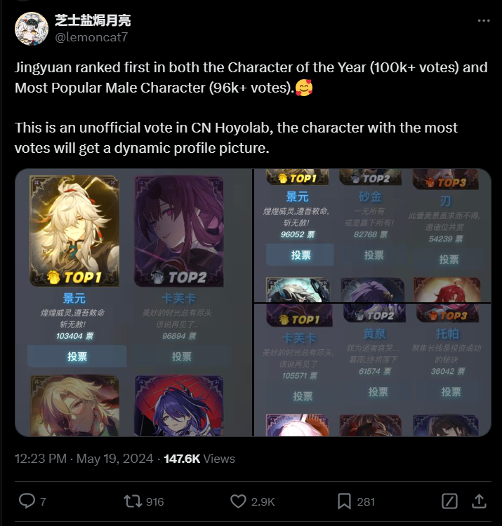

There has been a new trend in the game industry where a lot games began introducing gacha mechanics in their video game. Whether is a mechanic to give players a new weapon to help the characters they're playing become stronger, or a way to get unique skins that serves no other purpose than making a character look "nicer". According to the Reliable Research IQ, a premier market research firm specializing in providing high-quality data research solutions for businesses, The Gacha Games market is expected to grow annually by 11.1% by 2031.
As a video game player myself, I have my thoughts and seen discussion online on how some players believe that gacha games serve no purpose for players except to generate profit and that companies would make abhorent gacha rates to force players to keep spending more in their games. However, this idea has never really been challange and there is no clear indication on whether the drop rates of the game actually affects how players spend on the game or if it is other factors that players may have not considered.
As such, I will be exploring that topic today. I will be focusing on games that are available on mobile and I'll currently only be looking at how these games are performing in 2024.
To start I believe it's important for us to see the top 50 best selling mobile gacha games in 2024! The following is a breakdown of the 45 best selling mobile gacha games in 2024 alongside a breakdown of the different genre's each game falls under and what year the game was released in.
So in 2024, 14 out of the 45 most profitable gacha games fall under the role-playing genre, which may indicate that a lot of spenders tend to prefer games in that genre. Adventure comes second with 8. On top of that, at least 10 games were released in 2024. This could mean that some players are simply spending to consume all the possible contents in that game as quickly as possible. It may also be recency bias where players feel more inclined to spend their money to games they just begun.
It seems to be a linear scale in regards to when each game were released. The newer the game, the more likely it is to remain on the most profitable chart. Which, again, is ikely because the older the game, the more bored a player might be when playing it because they may think that they've experienced everything the game has to offer.
While there is no specific trend, it's clear that the revenue gacha games generate tend to fluctuate a lot. Some months could be way more profitable than others and the rates offered by the games would not have changed. It would be the content that change. Which indicates that it isn't the rates thats affected how players spend, its the content they produce.
Take for instance Honkai Star Rail, which had the most profit overall compared to every other game on this list in March. Doing further research showed me that 2 highly anticipated characters were re-released this month (Jing Yuan, 1st in the most recent anniversary popularity vote) and another character that is going to be released in late March (Archeron, 4th in the most recent anniversary popularity vote). It's very likely that this is why people ended up spending a lot of money, they wanted to either get JingYuan that month, or begin saving for Archeron.
Take for instance Honkai Star Rail, which had the most profit overall compared to every other game on this list in March. Doing further research showed me that 2 highly anticipated characters were re-released this month (Jing Yuan, 1st in the most recent anniversary popularity vote) and another character that is going to be released in late March (Archeron, 4th in the most recent anniversary popularity vote). It's very likely that this is why people ended up spending a lot of money, they wanted to either get JingYuan that month, or begin saving for Archeron.
However, I am still curious to see whether or not there is an overall trend with how drop rates can affect the profit for various games .......
insert conclussion